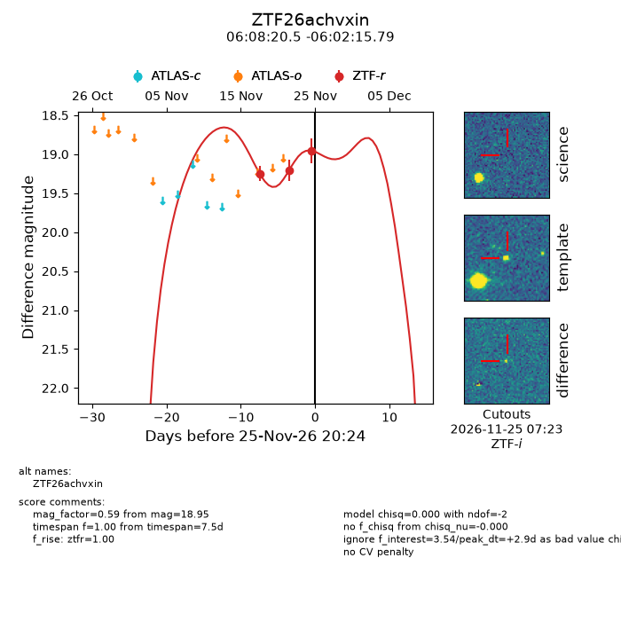
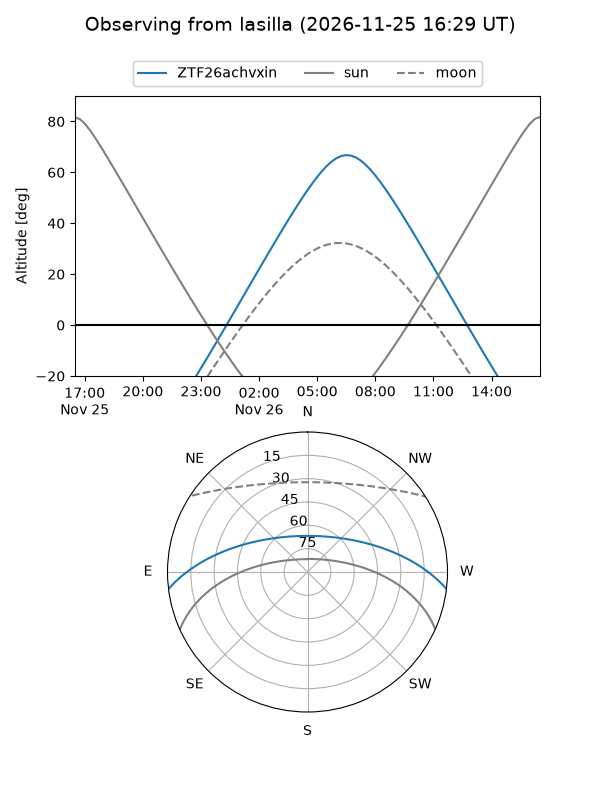
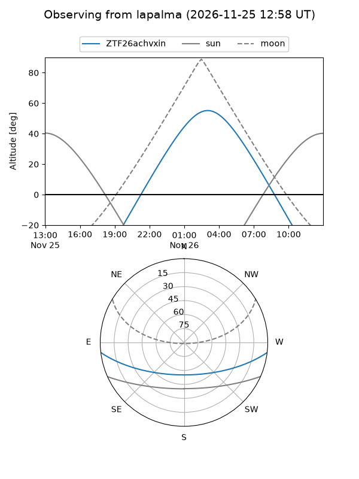
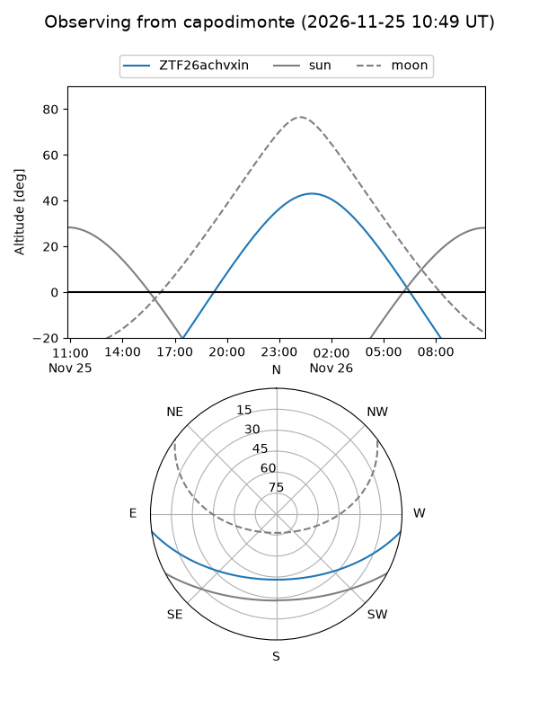
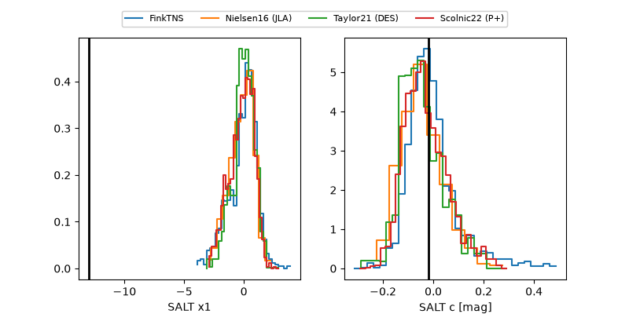

ZTF26achvxin
Target ZTF26achvxin at 2026-11-26 08:26
Aliases and brokers:
FINK-ZTF: ztf.fink-portal.org/ZTF26achvxin
Lasair-ZTF: lasair-ztf.lsst.ac.uk/objects/ZTF26achvxin
ALeRCE-ZTF: alerce.online/object/ZTF26achvxin
Direct TNS query: direct search
alt names
ZTF26achvxin (ztf,fink_ztf)
Coordinates:
equatorial (ra, dec) = 92.0852,-6.03772
equatorial (HMS+DMS) = 06:08:20.45,-06:02:15.79
galactic (l, b) = (213.4505,-12.32245)
Flags:
peak dt: +3.4
Photometry:
last ztfr=18.95
3 ztfr detections
Lightcurve

Visibility



Additional plots
